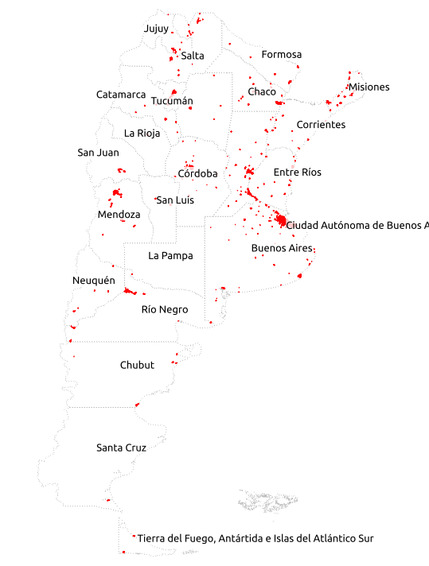
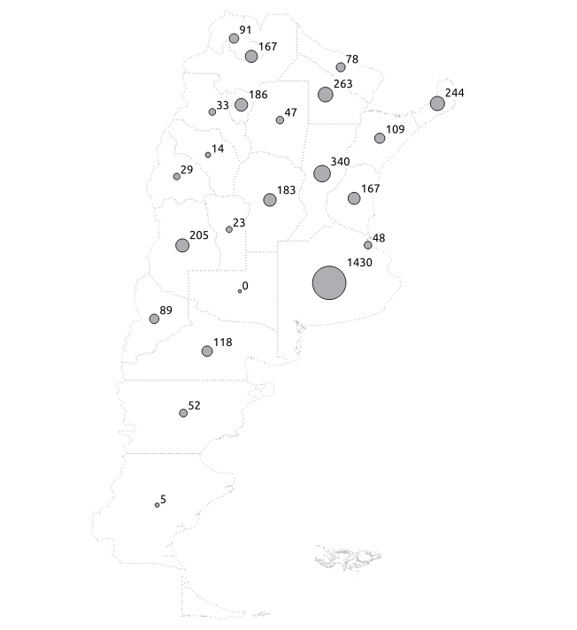
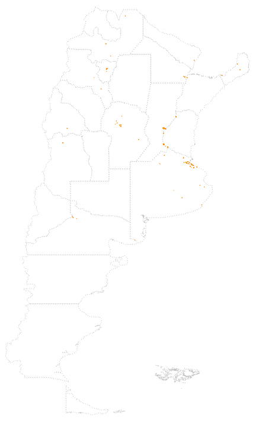
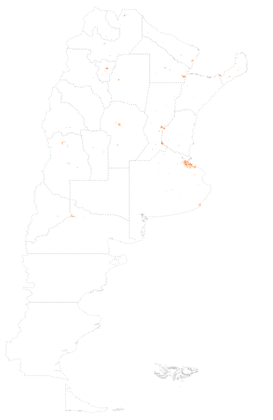
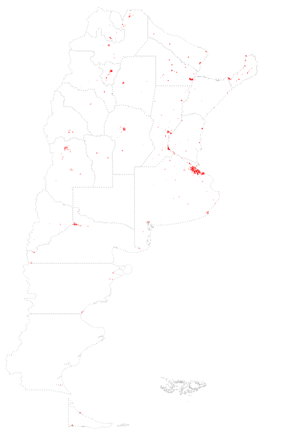

TECHO is a non-profit organization present in 19 countries of South América and the Caribbean. As part of their work in political advocacy they research slums in different countries since 2009.
This visualisation is based on the data published from Argentina 2016, there also information about 2013 and 2018 which is still in progress. The methodology is based on an operational definition of slum, which is: 8 or more contiguous or clustered living families where more than half of the population is lacking legal rights to the land and lacking formal access to 2 of the 3 basic services (electricity, watter supply and sewers). There's an instrument for information gathering or survey that collects social and urban information about slums. Each row is a represents a community, each survey is completed in company of one o more community leaders.
More information in final research report and data source . Also oficial campaing site.Quantity of slums detected grouped by province
 La Pampa was not covered, that is why appear 0 slums
% of people living in slums (colors) total population (circle size)
CTRL + Scroll to zoom
% of people living in slums (colors) total population (circle size)
CTRL + Scroll to zoom
TECHO's research includes a calculate rate of vulnerability base on amenities and disamenities (more about ir here)
Departments with most vulnerable slums
CTRL + Scroll to zoom
The survey includes a question about
Departments with most vulnerable slums
CTRL + Scroll to zoom
In the chart it can be seen a spike around year 2000, anyone who lives in Argentina know about 2001 economic crisis, this might be related to that.
The AVERAGE age of a slum is avg 28.53 years old.
As I found out asking TECHO's project leader for this research Florencia Yaccarino: "Creation year is sometimes fuzzy in the memory of community leaders, most times is estimated. That's why so many are created in years ending in 0 or 5"
As it can be seen in the charts, in Buenos Aires the occurence of slums has been increasing massively from a long time. This might be related to the gravitation big cities have.
In 1940, 1980 and 2016. Slums seem to take place around the city in a phenomenon called "Social production of the city"
  